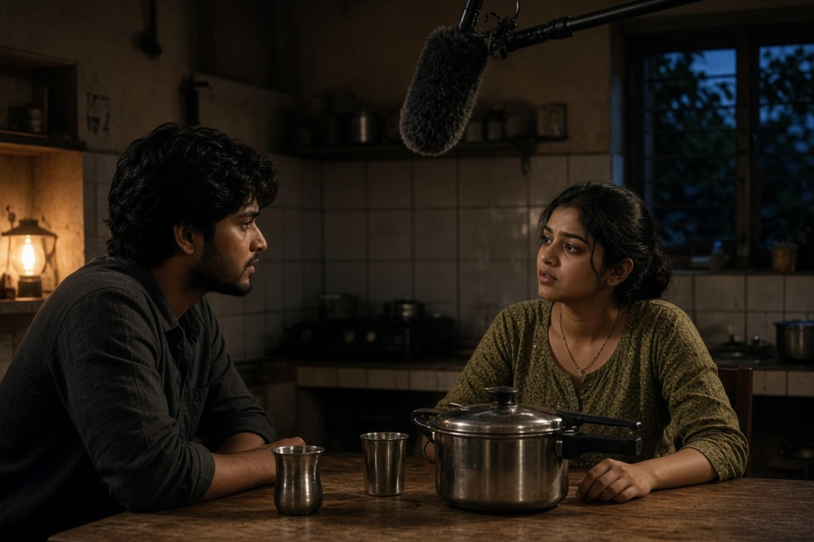
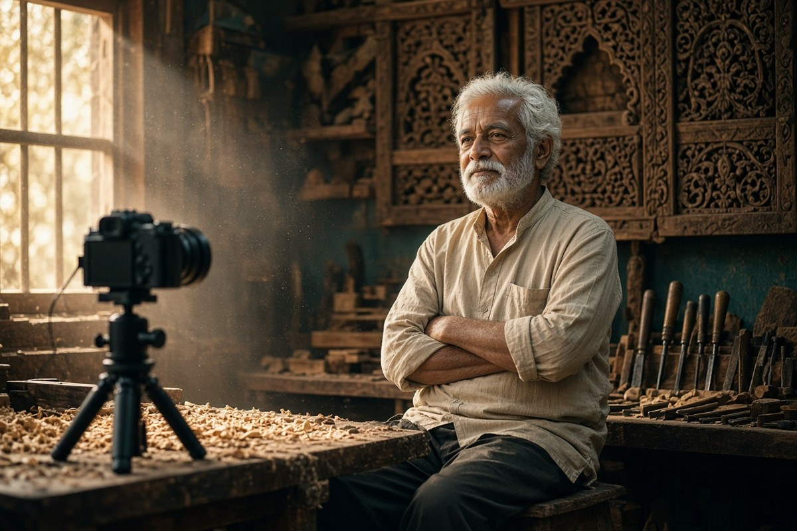
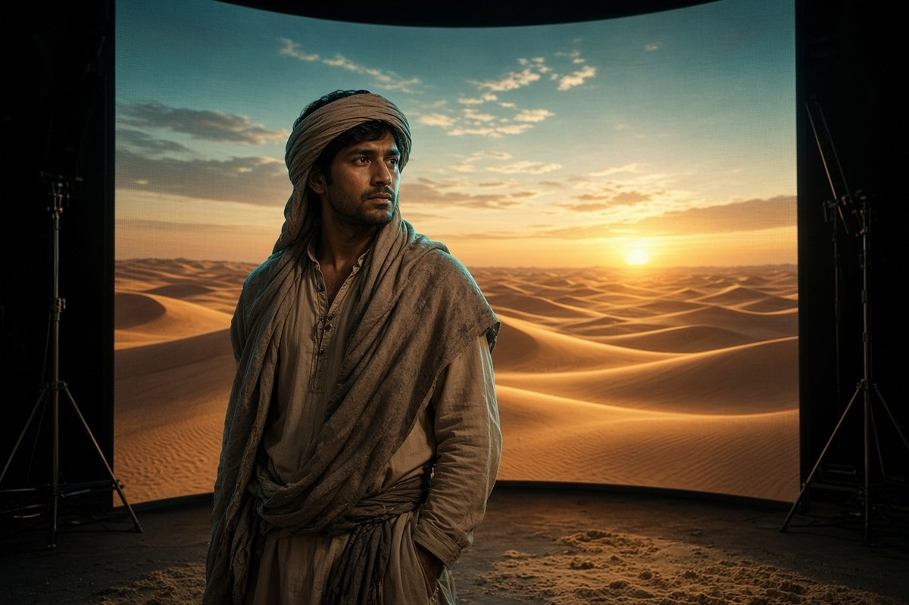
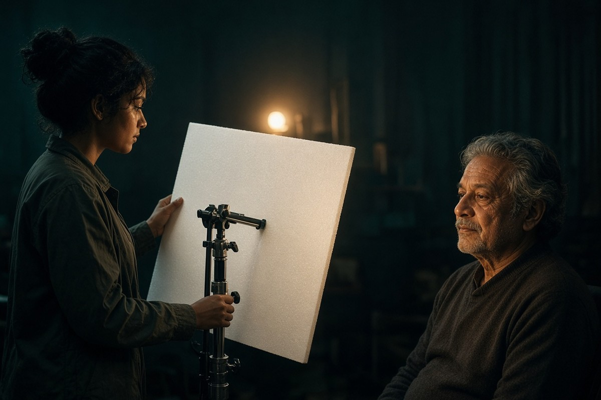
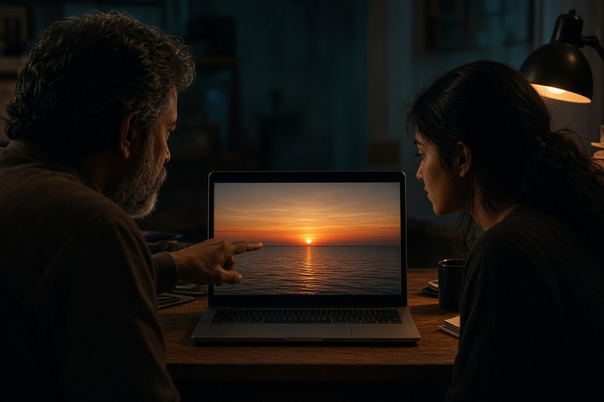

Learn the craft
by making six films.
Directing is a learnable craft: where the camera stands, what the audience knows, when to cut. Here is exactly what is open today and what is coming.
What you can do today.
Videogrammer classroom on Skool
Our existing online classroom and community on Skool, where our current courses live.
Separate from the 48-week programme.
Visit the classroom →AI Film School, 48-week programme
A programme built around six films each learner makes, from a silent point-of-view film to a crewed thesis film.
Written in full. Not open for enrolment; no cohort taught yet; not accredited. Dates and fees not announced.
Register interest →V AI in school mode
Asks for the learner's attempt first, critiques their real work and records their authorship.
Not built yet.
Register interest →Six films, each harder.
Each film adds responsibility, and the help from V AI steps back as you step up.




| Film | Weeks | What you make | What it teaches |
|---|---|---|---|
| 1 | 2–4 | A silent point-of-view film, 45–90 seconds | Geography, framing, montage, personal intention |
| 2 | 14–16 | An actor-led dialogue film, 2–4 minutes | Casting, rehearsal, blocking, camera, sound, edit |
| 3 | 22–24 | A nonfiction or hybrid essay, 3–5 minutes | Research, subject ethics, archive, argument, sound |
| 4 | 30–34 | A hybrid proof shot or sequence, 30–90 seconds | A controlled AI, virtual-production or effects pipeline, and diagnosing its failures |
| 5 | 35–40 | A specialisation showcase, 2–4 minutes | Depth in one role, and handing work across departments |
| 6 | 41–48 | A crewed thesis film, 5–10 minutes | Voice, craft, collaboration, delivery and a jury defence |
Before you decide.
- Who it is for
- People who want to direct films, from a first film to working professionals.
- How it is taught
- Online. The 48-week programme is designed around 144 taught sessions and supervised production labs.
- Language
- English.
- Weekly time
- Not announced yet for the programme.
- Equipment and software
- A phone camera is enough to start. Software costs depend on the tools you choose; we will list them before enrolment opens.
- Teaching and feedback
- Designed around critique of your own films. Instructor arrangements will be announced before enrolment.
- Fees
- Not announced for the programme. Classroom course prices are shown on Skool.
- Start date
- Not announced. Register interest and we will tell you first.
- Certificate and accreditation
- The programme is not accredited and offers no degree.
A teacher, not a ghostwriter.

AI-generated illustrationIt will ask for your attempt before it shows an answer, critique the script, frames or cut you actually made, and record what you made and what it suggested. It will never finish an assignment and call it your skill, and your work never trains a model without your written consent. Planned